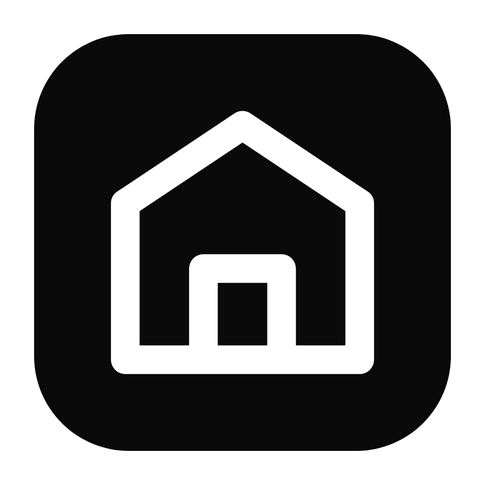

AI ArchitecturesWhat would you like to do?
You can switch any time from the menu.
CAD studio
Drop a sketch or describe a building. The drafter draws a layered, dimensioned CAD plan you can edit, see in 3D, render and export as DXF, DWG and PDF.
Open CAD studio →Quick render
A sketch, photo or plan in, a photoreal architectural render out, in seconds. Interiors, exteriors and redesigns.
Open quick render →Shortcuts: Ctrl+1 CAD studio · Ctrl+2 Quick render